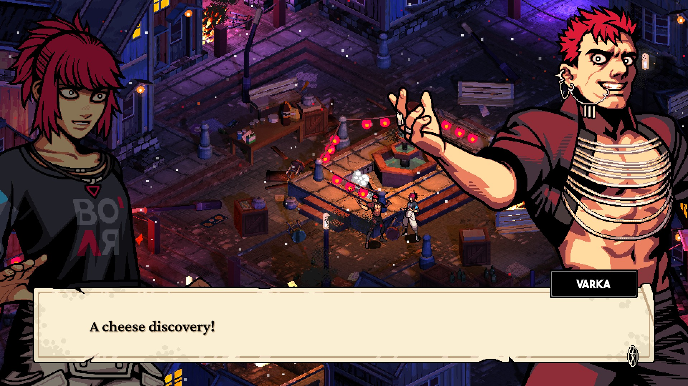
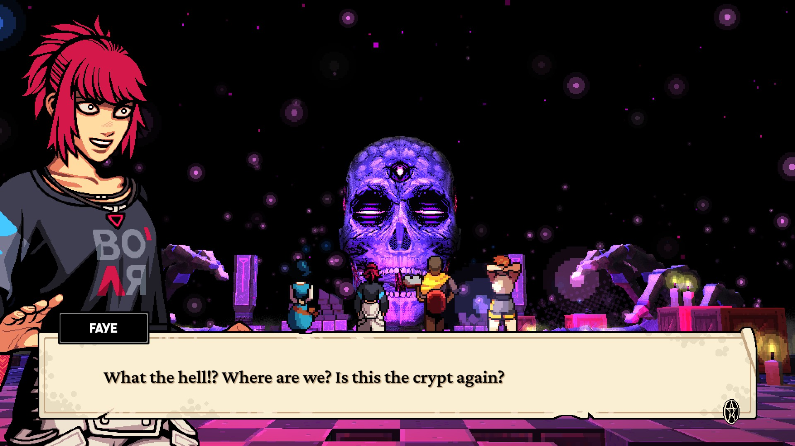
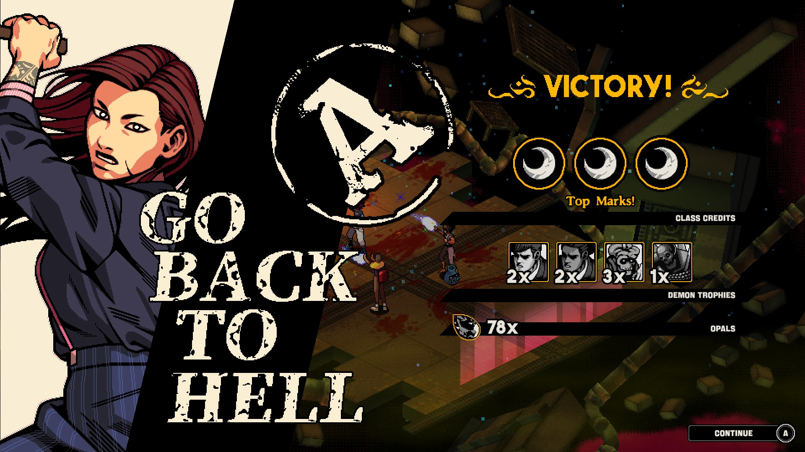
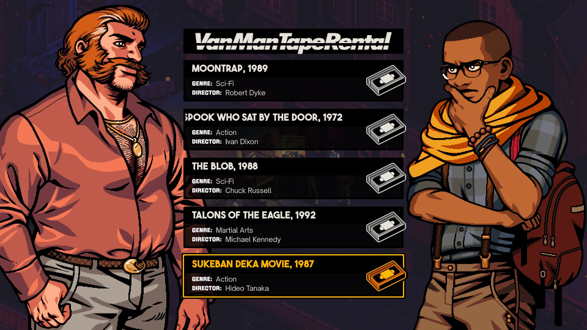

Demonschool is a puzzle-strategy game by developer Necrosoft, a small studio out of Ireland that was responsible for Hyper Gunsport and Gunhouse. While neither of those had major market appeal (despite being solid games in their own right), Demonschool serves to be a powerhouse in a genre mostly dominated by Into the Breach. While the game is clearly inspired by Persona 1 and 2, this is not an RPG proper. Rather, where this game lacks a leveling system and character customization, it makes up for it in strong strategic gameplay, kissable characters, beautiful pixel and 3D art aesthetics, and an all-star soundtrack.
Demonschool's plot is, by many metrics, rather standard per its inspiration. You play as Faye, daughter of a demon hunter bloodline, as she attempts to attend school on Hemsk Island as a ploy to prevent the upcoming demonic apocalypse. Through her travels, she meets a large number of friends and foes, teaches those who can't fight to do so, and finds a new family of people to care about among the denizens of the island, while also managing to be a fun, relatable, and engaging character in her own right. This goes doubly-so for the party members, each of which has their own storyline and potential romance. This game doesn't lock you into any particular configuration of romances, either; you can be as polyamorous as you want, and most party members are romanceable. By default, Faye seems to lean a little more towards women than men (mostly because the party is majority-women), but there are a couple of dude-romances in there as well. None of these are required to beat the game, but some are required for skill scrolls, and that's how we like it. Most characters are lovable, and while some fall a bit flat (Ti and Kestrel, mostly, and Varka to a lesser extent), there's someone for everyone to smooch, with my truly beloved being the final party member.

The apocalypse stops for no-one, however, no matter how ready you are, and as a result this game takes place across 11 weeks in-game. Unlike its inspiration in the Persona series, this game is on rails; you can't grind, you can't alter the order of your path, and you can't miss major events. This sometimes leads to the life segments of the game feeling a little off, but since this game is beatable without doing any side content or even equipping a single skill, you're able to take the parts of the story you care about and miss the ones you don't. However, while the beginning of the game is quite slow, the middle-end are almost breakneck, feeling like the last 4 weeks go by in an instant. Yet, once you're at the end, there's no wondering "how did I get here" due to the masterful pacing. If I had any complaints about the story, it would just be that there are a few sections that feel like they overstay their welcome in the last week or two when the pacing is otherwise much faster.

Mechanically, this game is a puzzle-strategy game, not properly an RPG or SRPG, in a similar vein as Into the Breach. While this is fine, I feel as though the marketing was a lot less clear on this point, possibly intentionally as the niche is harder to sell to. This does not, however, mean that I'm not happy with what I received, and I'm probably happier that it was this. The major problem I have with this game is that some sections of the game are very heavy on very slow fights, and if this were a proper RPG with grindable battles and levels, those sections would have been unbearable. Instead, every battle (except one) is clearable with no unlocked skills (except Mercy's first familiar) with a perfect mark. Rather than character customization or leveling proper, the player receives skill scrolls which adjust the abilities of characters they're equipped to after being studied and spending class marks (received for doing well in battle). This system is EXTREMELY generous, and I had over 200 excess marks and 6000 excess opals (which can be used to buy a number of scrolls, as well as cosmetic furniture for the clubhouse) at the end of the game after buying and unlocking everything. Everything, that is, except one singular skill scroll that I'm not sure how I missed. This game has a few technical bugs, and I suspect that's due to one of them, but none of the errors I encountered were game-breaking, with the worst of them being some strangeness with the camera in a section towards the middle of the game. Back to the mechanical aspects, most of this game revolves around a grid, using characters to push, pull, stun, and attack enemies to death, meeting a quota of enemies killed. This is simple and very satisfying when you do it well, but sometimes leads to board layouts that just feel a little lackluster, and may have felt better in a shorter game. Different characters have different capabilities, and finding the combinations you like feels good. Overall, the gameplay proper is the weakest part of the game, but is even then by no means a slouch.

The music for this game is incredible. Multiple tracks in this game have hit my all-time favorite game tracks list near-instantly, including my all-time favorite, Tuesday's overworld theme. The tracks are catchy and thematic in a way that echos the game's early-Persona inspiration quite well, and even the battle theme is upbeat but unobtrusive enough to not get annoying after hours of play. The art in this game, however, is the real star. Every single character has numerous visual novel-style portraits for multiple moods, all in a delightful pixel art style. Every enemy sprite, every character sprite, every environment piece is well-crafted, easily recognizable, and pretty. The 3D art for the environments and the puppeteered 3D art for the bosses are phenomenal as well, and the whole thing works cohesively as one beautiful work of art. Everyone on the art design team should be immensely proud of themselves. Well done.

My final section here has a pretty easy recommendation: play this. The game is good, it's accessible to as many people as possible (including multiple colorblindness modes, multiple control layouts, and a Near-Invincible mode for players who don't care for the strategic gameplay aspects), and it's relatively inexpensive for how masterful the final product is. I put off playing this for a long time due to depression, and I'm glad I did, because now that I'm in a better spot, I really enjoyed the ride. Thank you, Necrosoft. I'm giving this one an 8/10.